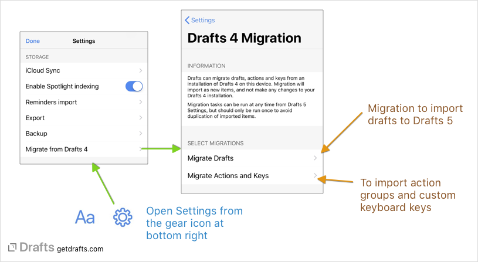
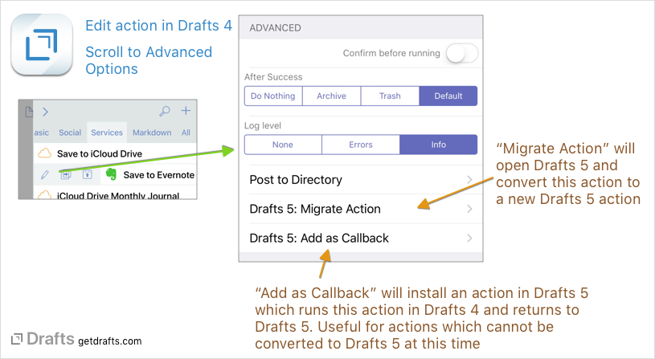

Migrating from Drafts 4
The current version of Drafts installs as a new, separate app and does not replace installations of Drafts 4. Migration will not affect your installation of Drafts 4. Both operate independently. Drafts and actions do not sync between versions, but they can be migrated from Drafts 4 to the new Drafts at any time. It is up to you to decide when you are ready to migrate.
Quick Facts
Don’t want all the details? Just open the latest version of Drafts, go to
Settings > Migrate from Drafts 4to import drafts and actions from Drafts 4.
Migration Notes
- Migration requires Drafts 4.8.5 or greater installed on the device migrating.
- Migrate drafts only once on a single device or duplicate data will be created. Do not migrate on both your iPhone and iPad. Migrated data will sync between devices.
Migrating All Drafts

To migrate all drafts, visit Settings > Migrate from Drafts 4 > Migrate Drafts. If Drafts 4 is installed, the new Drafts will see Drafts 4 data, and migration will be available. A preview of the number of drafts to import will appear. Optionally, a tag can be assigned to drafts as they are migrated if you wish to mark the imported drafts for historical purposes. When ready, tap the Migrate Now button.
Drafts will maintain inbox, archive, flagged status as well as associated creation, modification dates, locations, etc., when importing Drafts from Drafts 4.
Migration is typically quite fast, but may take a short time to complete if you have a large history of drafts. It is recommended you allow migration to complete before exiting Drafts. Immediately after migration, Drafts will begin syncing data to iCloud. This may take some time as well on a large import, so be patient waiting for new drafts to appear on other devices.
Migrating Only Some Drafts
If you do not wish to migrate your entire Drafts history from Drafts 4, but want to move over only some content, you have a couple of options.
First, you can use the Drafts 4 export feature in Settings > Export Drafts can create an export file for only the inbox, for example. If you use this feature, and export as JSON format, and select Open in... > Copy to Drafts, you can import just the selected drafts.
Second, you can individually move select drafts using an action. In Drafts 4, install the Send to Drafts 5 action, and use it to send only the selected draft to Drafts 5.
Migrating Actions
A few things to know before migrating actions and keys from Drafts 4:
- Drafts 4 had a single extended keyboard row which is configured separately from actions. In Drafts 5, the extended keyboard is built from action groups. As a result, migration of the custom keyboard row will create a new action group with the migrated keys.
- Drafts 5 supports many new, more powerful actions, however, not all actions available in Drafts 4 can be supported in Drafts 5. Migration will make note of the number of actions that could not be migrated. In these cases, check the Action Directory for similar replacements, or contact support for assistance.
- Action migration will only migrate groups. If you have actions in Drafts 4 that are not assigned to a group (the tabs at the top in Drafts 4), and only shows in the “All” tab, it will not be automatically migrated.
Migrating Action Groups and Keys
If you have many custom actions, or have spent time organizing your actions in Drafts 4, it may make sense to migrate all action groups and keys. To migrate all action groups and keys, visit Settings > Migrate from Drafts 4 > Migrate Actions and Keys and run each of the migration tasks. These tasks will create new Action Groups in Drafts 5 for each action group in Drafts 4.
Migrating Individual Actions and Calling Drafts 4
It is also possible to selectively migrate individual actions from Drafts 4. If you are only interested in migrating a small number of custom actions from Drafts 4, this may be a better option.

To individually migrate actions:
- Open Drafts 4.
- Swipe to the right on the action you wish to migrate and tap the edit button.
- Scroll to the bottom to the
Advancedoptions section.
If Drafts 5 is installed on the device, the following options will be available:
- Drafts 5: Migrate Action: This option will open Drafts 5 and attempt to convert the action to a Drafts 5 action and allow you to select an action group to place the action.
- Drafts 5: Add as Callback: This option will open Drafts 5 and create a new action which is configured to run this action in Drafts 4 using x-callback-url, and return to Drafts 5 using the Run Drafts 4 Action action step. This is typically a secondary option for action types that you may rely on which cannot currently be reproduced in Drafts 5, because support for a service has not yet been implemented.